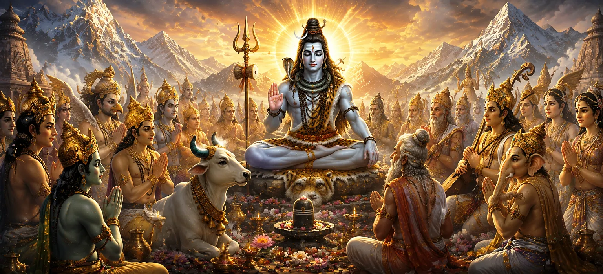

इस अध्याय में बताया गया है कि कैसे देवता, ऋषि और दिव्य प्राणी भगवान शिव की हार्दिक स्तुति करते हैं। उनकी अथाह शक्ति, दैवीय न्याय और असीम करुणा को देखकर, वे पवित्र भजनों और प्रार्थनाओं के माध्यम से उनकी महिमा करते हैं। उनकी स्तुतियाँ शिव को सर्वोच्च भगवान के रूप में स्वीकार करती हैं जो ब्रह्मांड को बनाए रखने और मार्गदर्शन करने के साथ-साथ सृष्टि से परे हैं।
सामने आई असाधारण घटनाओं के बाद, देवता और ऋषि गहरी श्रद्धा के साथ एकत्र हुए। भगवान शिव की महानता को महसूस करते हुए, वे पूजा में एकजुट हुए और सर्वोच्च भगवान के सामने अपनी स्तुति अर्पित करने के लिए तैयार हुए।
देवताओं ने धर्म की रक्षा और भक्तों के प्रति उनकी करुणा के लिए शिव की स्तुति की। उनके भजनों ने उनके मार्गदर्शन के लिए आभार व्यक्त किया और उन्हें आध्यात्मिक मुक्ति और दिव्य ज्ञान के स्रोत के रूप में मान्यता दी।
स्तुति में इस बात पर जोर दिया गया कि भगवान शिव केवल कई लोगों के बीच एक देवता नहीं हैं, बल्कि सभी अस्तित्व में अंतर्निहित सर्वोच्च वास्तविकता हैं। वह समय और स्थान की सभी सीमाओं से परे, ब्रह्मांड का स्रोत, पालनकर्ता और अंतिम आश्रय है।
यद्यपि शिव के पास अपार शक्ति है, देवताओं ने विशेष रूप से उनकी करुणा और क्षमा करने की इच्छा की प्रशंसा की। उनकी कृपा उन सभी प्राणियों पर फैली हुई है जो अपनी पिछली गलतियों या कमियों की परवाह किए बिना ईमानदारी से उनकी शरण लेते हैं।
सच्ची स्तुति से व्यक्ति का ईश्वर के साथ संबंध मजबूत होता है।
शिव को समस्त अस्तित्व के अंतिम स्रोत के रूप में मान्यता प्राप्त है।
प्रभु की कृपा सभी सच्चे साधकों के लिए उपलब्ध है।
अध्याय सिखाता है कि भगवान शिव की सच्ची पूजा और स्मरण से आध्यात्मिक आशीर्वाद, मन की शांति और मुक्ति की दिशा में प्रगति होती है। भक्ति हृदय को शुद्ध करती है और उच्च समझ को जागृत करती है।
अपनी सामूहिक स्तुति के माध्यम से, देवताओं ने भगवान शिव की महानता को पहचानने में सद्भाव और एकता का प्रदर्शन किया। अध्याय इस बात पर प्रकाश डालता है कि सभी दैवीय शक्तियाँ अंततः एक ही शाश्वत सत्य की ओर इशारा करती हैं।
यह अध्याय भक्तों को याद दिलाता है कि कृतज्ञता, विनम्रता और सच्ची भक्ति हृदय को दिव्य कृपा के लिए खोलती है। भगवान शिव को याद करने और उनकी स्तुति करने से व्यक्ति में आध्यात्मिक शक्ति, ज्ञान और शाश्वत सत्य के साथ गहरा संबंध विकसित होता है।
देवताओं ने समझा कि पवित्र भजन प्रशंसा के शब्दों से कहीं अधिक हैं; वे भक्ति की शक्तिशाली अभिव्यक्तियाँ हैं जो आत्मा को परमात्मा से जोड़ती हैं। अपनी हार्दिक प्रार्थनाओं के माध्यम से, उन्होंने भगवान शिव की उपस्थिति का आह्वान किया और उनके असीमित गुणों पर विचार किया। अध्याय इस बात पर प्रकाश डालता है कि दिव्य नामों और गुणों का ईमानदारी से पाठ करने से मन कैसे शुद्ध हो सकता है और आत्मा का उत्थान हो सकता है।
जैसे ही देवताओं ने भगवान शिव की महिमा की, उनके हृदय शांति और आध्यात्मिक आनंद से भर गए। भगवान की महानता को याद करने से उनके मन से डर, गर्व और अनिश्चितता दूर हो गई। अध्याय सिखाता है कि ईश्वर की निरंतर याद आंतरिक सद्भाव लाती है और समृद्धि और प्रतिकूलता दोनों के दौरान किसी के विश्वास को मजबूत करती है।
"जो लोग भक्तिपूर्वक भगवान की स्तुति करते हैं वे शाश्वत ज्ञान की रोशनी पाते हैं।"
सती खण्ड की पवित्र घटनाओं की खोज जारी रखें क्योंकि देवता भगवान शिव की हार्दिक स्तुति करते हैं, और कहानी शिव की असीम करुणा की ओर आगे बढ़ती है क्योंकि वह दक्ष की पीड़ा को दूर करते हैं और सद्भाव बहाल करते हैं।